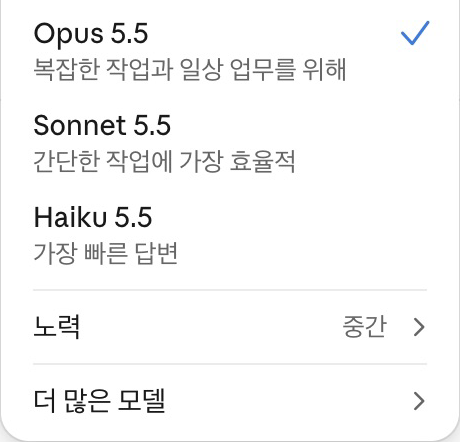
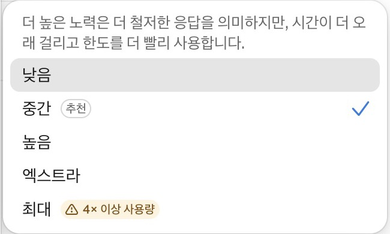

필요한 품질을 얻으면서
사용 한도를 오래 쓰는 방법
어떤 AI에게 맡길지
작업의 종류와 난도에 맞춰 선택
얼마나 꼼꼼하게 처리할지
높일수록 시간·사용량 부담 증가
effort를 높여도 다른 모델로 바뀌지는 않습니다.
기본 모델
대부분 여기서 시작
쉬운 일상 업무
더 빠르게
짧은 요약·분류
기본으로는 비권장
모델별 고정 횟수는 확인한 공식 자료에 공개돼 있지 않습니다.
정성적 비교이며 소모 배수를 뜻하지 않습니다. 남은 양은 설정 → 사용량에서 확인하세요.
출처: Claude Academy · Choosing a Claude model (2026.11.12 확인)
Opus 4.5 · 소프트웨어 문제 평가 · Medium → High
약 5천 → 1만 1천 개
약 77% → 81%
Anthropic, Introducing Claude Opus 4.5 · 2025.11.24 그래프 근삿값
Extended thinking OFF · 과거 코딩 평가이며 Team 한도 소진율을 뜻하지 않습니다.
오른쪽 아래 모델 이름과 노력 수준

실제 화면 일부 · 2026.11.04 캡처

체크 표시(✓)가 현재 선택값입니다.
회색 배경은 마우스가 올라간 항목입니다.
‘추천’ 단계부터 시작하세요.
실제 화면 일부 · 표시 배수는 모든 모델의 고정 소모율이 아닙니다.
결과가 충분하면 유지
복잡한 작업에서 부족하면 한 단계 상향
자료와 요청 조건을 먼저 점검하고
모델과 effort는 하나씩 바꿔 보세요.
KNUE AI GUIDE · Claude · VOL.03
공식 출처와 자세한 설명은 3주차 자료에서 확인하세요.